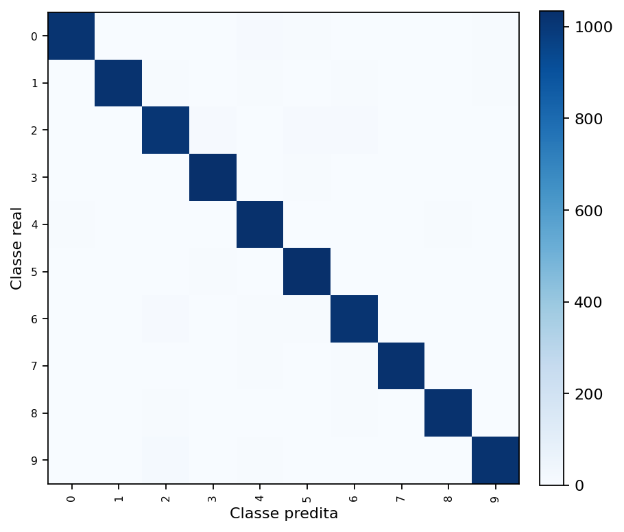
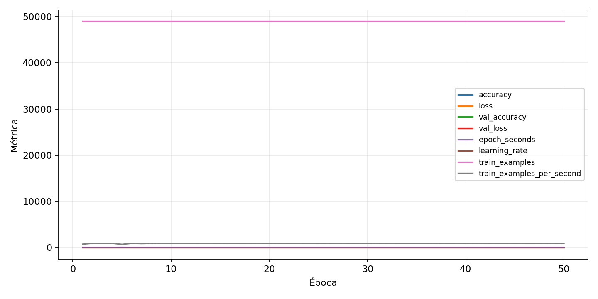

| n_samples | 10500 |
|---|---|
| loss | 0.13902294635772705 |
| accuracy | 0.9740952380952381 |
| balanced_accuracy | 0.9740952380952379 |
| macro_f1 | 0.974119054823696 |


| Índice | Classe | Suporte | Precisão | Recall | F1 |
|---|---|---|---|---|---|
| 0 | 0 | 1050 | 0.9892891918208374 | 0.9676190476190476 | 0.9783341357727492 |
| 1 | 1 | 1050 | 0.982642237222758 | 0.9704761904761905 | 0.9765213224724484 |
| 2 | 2 | 1050 | 0.9563981042654028 | 0.960952380952381 | 0.9586698337292162 |
| 3 | 3 | 1050 | 0.9745762711864406 | 0.9857142857142858 | 0.9801136363636362 |
| 4 | 4 | 1050 | 0.9598130841121495 | 0.9780952380952381 | 0.968867924528302 |
| 5 | 5 | 1050 | 0.968075117370892 | 0.981904761904762 | 0.9749408983451537 |
| 6 | 6 | 1050 | 0.9594721960414703 | 0.9695238095238096 | 0.964471814306016 |
| 7 | 7 | 1050 | 0.9865384615384616 | 0.9771428571428571 | 0.9818181818181818 |
| 8 | 8 | 1050 | 0.9789875835721108 | 0.9761904761904762 | 0.977587029089175 |
| 9 | 9 | 1050 | 0.9864864864864865 | 0.9733333333333334 | 0.9798657718120806 |
{"adapter":"kmnist","balance_mode":"all_raw","class_names":["0","1","2","3","4","5","6","7","8","9"],"dataset":"kmnist","dataset_options":{},"dataset_root":"/home/msduda/datasets-tcc/kmnist","native_channels":1,"normalization":"unit_interval","num_classes":10,"protocol":{"checkpoint_monitor":"val_macro_f1","dtype_policy":"mixed_float16","early_stopping":{"patience":50,"restore_best_weights":true},"evaluation_augmentation":false,"input_channels":"native","optimizer":"Adam","pretrained_weights":false,"reduce_lr_on_plateau":{"factor":0.3,"min_lr":1e-07,"patience":50},"resize":"proportional_padding","test_time_augmentation":false,"training_from_scratch":true},"seed":42,"source_fingerprint":"8928d478d8d23938a73b4f4a92c407bf3d74beff1e0e67e3644d6ecdc30cf828","source_manifest":{"class_names":["0","1","2","3","4","5","6","7","8","9"],"joined_samples":70000,"metadata":{"layout":"kmnist-component-npz"},"name":"kmnist","native_channels":1,"source_path":"/home/msduda/datasets-tcc/kmnist","splits":{"test":10000,"train":60000},"target_size":64},"target_size":64,"test_fraction":0.15,"train_fraction":0.7,"training":{"augmentation":{"brightness_delta":0.0,"contrast_lower":1.0,"contrast_upper":1.0,"cutout_max_frac":0.0,"cutout_prob":0.0,"flip_lr":false,"noise_std":0.0,"translate_frac":0.0,"zoom_max":1.0,"zoom_min":1.0},"batch_size":448,"default_image_size":64,"dtype_policy":"mixed_float16","early_stopping_patience":50,"extra_fraction":0.0,"image_size_overrides":{"gtsrb":128},"keras_verbose":1,"learning_rate":0.0003,"max_epochs":50,"preprocess_cache_max_mib":0,"reduce_lr_factor":0.3,"reduce_lr_min_lr":1e-07,"reduce_lr_patience":50,"shuffle_buffer_max_mib":0},"validation_fraction":0.15}
{"epochs_completed":50,"epochs_recorded":50,"evaluation_seconds":18.47686034099752,"fit_seconds_current_attempt":3139.482707160001,"max_epoch_seconds":68.25262797100004,"max_epochs":50,"mean_epoch_seconds":52.9780898447198,"mean_train_examples_per_second":927.1564202811513,"median_train_examples_per_second":936.8000990328009,"min_epoch_seconds":51.43256383699918,"selected_checkpoint":"/mnt/e/tcc-benchmark/outputs/kmnist-alldata-noaug-batch-sweep-2026-08-06/batch-448/kmnist/runs/kmnist__unit_interval__all_raw__seed-42/checkpoints/best.keras","total_seconds":2648.90449223599,"training_seconds":2648.90449223599,"wall_seconds_current_attempt":3161.545720410999}
{"elapsed_seconds":3161.597839330003,"event_counts":{"data_preparation_end":1,"data_preparation_start":1,"epoch_end":50,"evaluation_end":1,"evaluation_start":1,"fit_end":1,"fit_start":1,"periodic":623,"run_completed":1,"train_start":1},"generated_at":"2026-08-08T07:51:35.193+00:00","gpu_backend":"pynvml","interval_seconds":5.0,"metrics":{"cpu_percent":{"count":681,"max":16.9,"mean":13.048898678414096,"min":0.0,"p50":13.4,"p95":16.3},"disk_data_free_bytes":{"count":681,"max":998270894080.0,"mean":998270832796.3818,"min":998270824448.0,"p50":998270832640.0,"p95":998270832640.0},"disk_data_percent":{"count":681,"max":2.7,"mean":2.7,"min":2.7,"p50":2.7,"p95":2.7},"disk_data_total_bytes":{"count":681,"max":1081101176832.0,"mean":1081101176832.0,"min":1081101176832.0,"p50":1081101176832.0,"p95":1081101176832.0},"disk_data_used_bytes":{"count":681,"max":27837997056.0,"mean":27837988707.61821,"min":27837927424.0,"p50":27837988864.0,"p95":27837988864.0},"disk_output_free_bytes":{"count":681,"max":207075430400.0,"mean":207062579762.373,"min":207061553152.0,"p50":207062413312.0,"p95":207062663168.0},"disk_output_percent":{"count":681,"max":79.3,"mean":79.3,"min":79.3,"p50":79.3,"p95":79.3},"disk_output_total_bytes":{"count":681,"max":1000186310656.0,"mean":1000186310656.0,"min":1000186310656.0,"p50":1000186310656.0,"p95":1000186310656.0},"disk_output_used_bytes":{"count":681,"max":793124757504.0,"mean":793123730893.6271,"min":793110880256.0,"p50":793123897344.0,"p95":793124667392.0},"elapsed_seconds":{"count":681,"max":3161.538501,"mean":1583.6210938516888,"min":0.028598,"p50":1586.012379,"p95":3016.730746},"gpu_count":{"count":681,"max":1.0,"mean":1.0,"min":1.0,"p50":1.0,"p95":1.0},"gpu_memory_percent":{"count":681,"max":52.11505889892578,"mean":49.408561017544784,"min":38.040781021118164,"p50":51.987648010253906,"p95":51.987648010253906},"gpu_memory_total_bytes":{"count":681,"max":8589934592.0,"mean":8589934592.0,"min":8589934592.0,"p50":8589934592.0,"p95":8589934592.0},"gpu_memory_used_bytes":{"count":681,"max":4476649472.0,"mean":4244163074.2555065,"min":3267678208.0,"p50":4465704960.0,"p95":4465704960.0},"gpu_temperature_c":{"count":681,"max":51.0,"mean":42.12334801762115,"min":38.0,"p50":42.0,"p95":49.0},"gpu_utilization_percent":{"count":681,"max":100.0,"mean":19.375917767988252,"min":1.0,"p50":10.0,"p95":59.0},"process_cpu_percent":{"count":681,"max":217.9,"mean":170.78795888399412,"min":0.0,"p50":177.6,"p95":212.0},"process_read_bytes":{"count":681,"max":10985472.0,"mean":10961232.822320117,"min":7933952.0,"p50":10985472.0,"p95":10985472.0},"process_rss_bytes":{"count":681,"max":4161609728.0,"mean":3805241446.249633,"min":1030098944.0,"p50":3811598336.0,"p95":4144046080.0},"process_vms_bytes":{"count":681,"max":50051477504.0,"mean":49612053697.97357,"min":39580598272.0,"p50":49699246080.0,"p95":49983320064.0},"process_write_bytes":{"count":681,"max":1392640.0,"mean":1374535.8002936859,"min":4096.0,"p50":1392640.0,"p95":1392640.0},"ram_available_bytes":{"count":681,"max":15537287168.0,"mean":12923890869.9442,"min":12569780224.0,"p50":12920197120.0,"p95":13532651520.0},"ram_percent":{"count":681,"max":24.4,"mean":22.232305433186493,"min":6.5,"p50":22.3,"p95":24.3},"ram_total_bytes":{"count":681,"max":16619085824.0,"mean":16619085824.0,"min":16619085824.0,"p50":16619085824.0,"p95":16619085824.0},"ram_used_bytes":{"count":681,"max":4049305600.0,"mean":3695194954.0558004,"min":1081798656.0,"p50":3698888704.0,"p95":4034654208.0}},"sample_count":681,"schema_version":1}